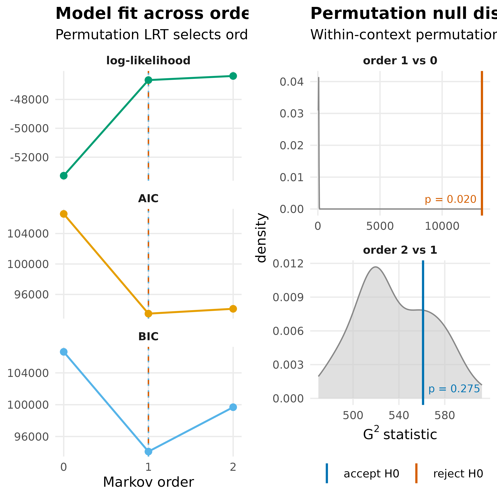
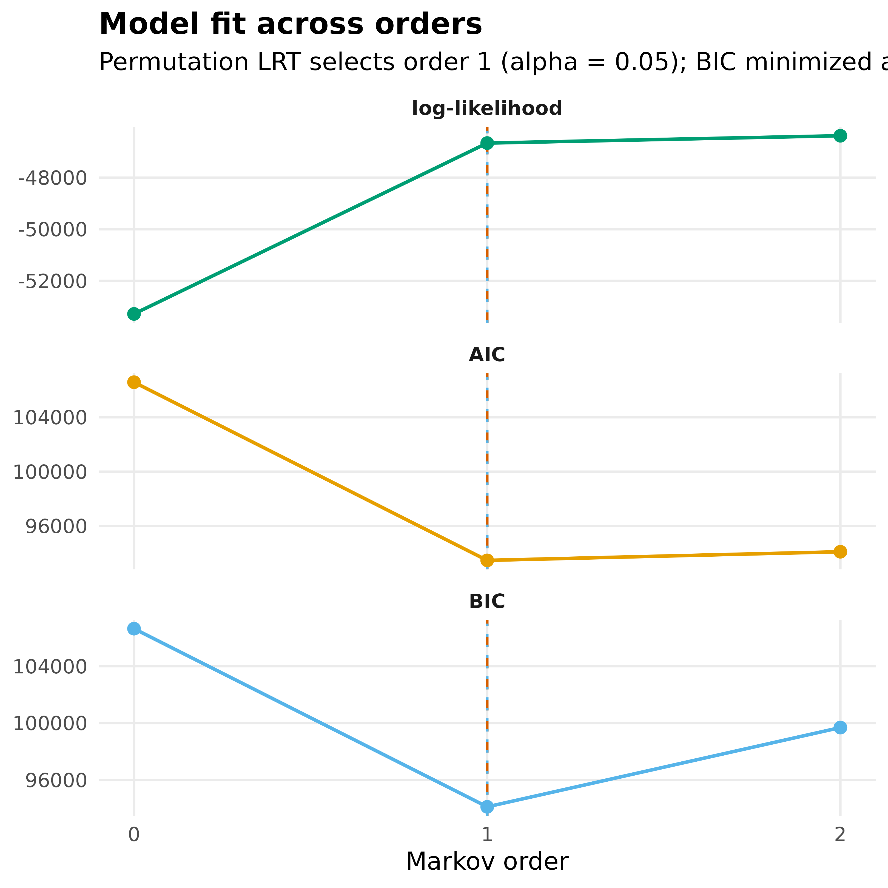

Tests whether the sequences of a model are described by a Markov chain of order one, the assumption of a transition network, or whether the next state also depends on states further back.
Usage
markov_order(x, max_order = 3L, iter = 1000L, level = 0.05, dof = "paths")
# S3 method for class 'tna'
markov_order(x, max_order = 3L, iter = 1000L, level = 0.05, dof = "paths")
# S3 method for class 'group_tna'
markov_order(x, max_order = 3L, iter = 1000L, level = 0.05, dof = "paths")Arguments
- x
A
tnaor agroup_tnaobject created from sequence data.- max_order
An
integer, the highest order to test. The default is 3. A value that is not lower than the length of the longest sequence is reduced to that length minus one, with a message.- iter
An
integer, the number of permutations for each order. The default is 1000.- level
A
numericvalue, the significance level of the tests. The default is 0.05.- dof
A
characterstring, how the parameters of each order are counted for AIC and BIC:"paths"(the default) or"observed". See 'Details'.
Value
A tna_markov_order object, which is a list with the elements:
stats: Adata.framewith one row per order from 0 tomax_orderand the columnsorder,loglik,aic,bic(the multi-order model),g2(the \(G^2\) statistic),df(its degrees of freedom),p_value(the permutation p-value),p_asymptotic(the \(\chi^2\) p-value), andsignificant(p_value < level). The test columns areNAfor order 0 and for an order whose statistic has no degrees of freedom.selected_order: The order selected by the sequential tests.aic_order,bic_order: The orders that minimize AIC and BIC.null: Alistwith the permutation distribution of \(G^2\) for each order.states: The states observed in the data.n_sequences,n_observations: The numbers of sequences (after splitting at missing values) and states used.max_order,iter,level,dof: The settings used.
For a group_tna object, a group_tna_markov_order object, which is a
list of tna_markov_order objects, one per group.
Details
For each order \(k = 1, \ldots,\) max_order, the test compares order
\(k - 1\) (the null hypothesis) with order \(k\). Every window of
\(k + 1\) consecutive states is split into the context \(w\) (the
\(k - 1\) states before the next state), the state \(x\) that order
\(k\) adds (\(k\) steps back), and the next state \(s\). Under the
null hypothesis, \(s\) is independent of \(x\) given \(w\). This is
tested with the likelihood-ratio statistic
$$G^2 = 2 \sum_{w, x, s} N_{wxs}
\log \frac{N_{wxs} N_{w}}{N_{wx} N_{ws}}$$
with \(\sum_w (r_w - 1)(c_w - 1)\) degrees of freedom, where
\(r_w\) and \(c_w\) are the numbers of distinct states \(x\) and
\(s\) observed with context \(w\) (Anderson & Goodman, 1957). For
\(k = 1\) the context is empty, and the test is whether the next state
depends on the current state at all.
The p-value comes from a conditional permutation test: within each context \(w\), the next states are shuffled, which keeps every count that the null hypothesis conditions on. The windows of a sequence overlap, so the permutation distribution approximates the null distribution but is not exact (an exact test would sample whole sequences with the same counts; Besag & Mondal, 2013). The asymptotic \(\chi^2\) p-value is reported alongside.
The orders are tested in sequence: the order is raised while the test
rejects at level level. The selected order is the highest order whose
test, and the test of every lower order, rejected. Order 0 means that the
next state does not depend on the current state, and max_order means
that no test failed to reject.
The results also contain the log-likelihood, AIC, and BIC of the
multi-order model of each order (Scholtes, 2017). This model uses the
state frequencies for the first state of a sequence and the highest
available order for each following state. With dof = "paths", the
parameters of an order are all the transitions of the paths that the
first-order transitions allow, observed or not (Scholtes, 2017). With
dof = "observed", only the transitions observed in the data are counted.
The orders that minimize AIC and BIC are reported next to the selected
order, but they do not affect the test.
Because the tests stop at the first order that does not reject, a
dependence that skips an order (for example, on the state two steps back
but not on the current state) is not selected. A warning of class
tna_warning_markov_order is therefore raised, and a note is printed,
when the test of an order above the selected order plus one rejects, or
when AIC or BIC select a different order than the tests. The same class
of warning is raised when iter is too small for any p-value to fall
below level (fewer than floor(1 / level) permutations).
Sequences are split at missing values, so that no window spans a missing value, and the parts with fewer than two states are not used. The windows are treated as independent observations, so sequences nested in actors (for example, several sessions per student) are not taken into account.
References
Anderson, T. W., & Goodman, L. A. (1957). Statistical inference about Markov chains. The Annals of Mathematical Statistics, 28(1), 89–110. doi:10.1214/aoms/1177707039
Besag, J., & Mondal, D. (2013). Exact goodness-of-fit tests for Markov chains. Biometrics, 69(2), 488–496. doi:10.1111/biom.12009
Scholtes, I. (2017). When is a network a network? Multi-order graphical model selection in pathways and temporal networks. In Proceedings of the 23rd ACM SIGKDD International Conference on Knowledge Discovery and Data Mining (pp. 1037–1046). doi:10.1145/3097983.3098145
See also
Validation functions
bootstrap(),
deprune(),
estimate_cs(),
permutation_test(),
permutation_test.group_tna(),
plot.group_tna_bootstrap(),
plot.group_tna_permutation(),
plot.group_tna_stability(),
plot.tna_bootstrap(),
plot.tna_markov_order(),
plot.tna_permutation(),
plot.tna_reliability(),
plot.tna_stability(),
print.group_tna_bootstrap(),
print.group_tna_permutation(),
print.group_tna_stability(),
print.summary.group_tna_bootstrap(),
print.summary.tna_bootstrap(),
print.summary.tna_markov_order(),
print.tna_bootstrap(),
print.tna_clustering(),
print.tna_markov_order(),
print.tna_permutation(),
print.tna_reliability(),
print.tna_stability(),
prune(),
pruning_details(),
reliability(),
reprune(),
summary.group_tna_bootstrap(),
summary.tna_bootstrap(),
summary.tna_markov_order(),
summary.tna_permutation(),
summary.tna_stability()
Examples
model <- tna(group_regulation)
# Small number of permutations for CRAN
mo <- markov_order(model, max_order = 2, iter = 50)
mo
#> Markov order test (50 permutations per order, 2000 sequences, 27533 states)
#>
#> order loglik aic bic g2 df p_value p_asymptotic
#> 0 -53280.55 106577.10 106642.88
#> 1 -46660.94 93475.87 94109.05 13203.77 64 0.020 0.000
#> 2 -46377.27 94110.53 99685.82 561.07 532 0.275 0.185
#> significant
#>
#> yes
#> no
#>
#> Selected order: 1 (sequential permutation tests at level 0.05)
#> Order with the lowest AIC: 1; lowest BIC: 1
summary(mo)
#> order loglik aic bic g2 df p_value p_asymptotic
#> 0 -53280.55 106577.10 106642.88
#> 1 -46660.94 93475.87 94109.05 13203.77 64 0.020 0.000
#> 2 -46377.27 94110.53 99685.82 561.07 532 0.275 0.185
#> significant
#>
#> yes
#> no
plot(mo)

plot(mo, panel = "ic")
